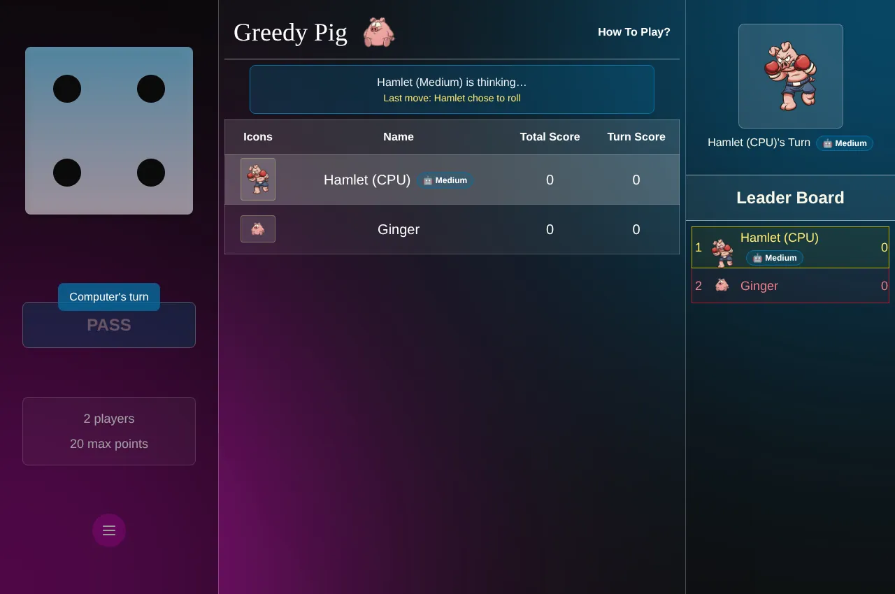
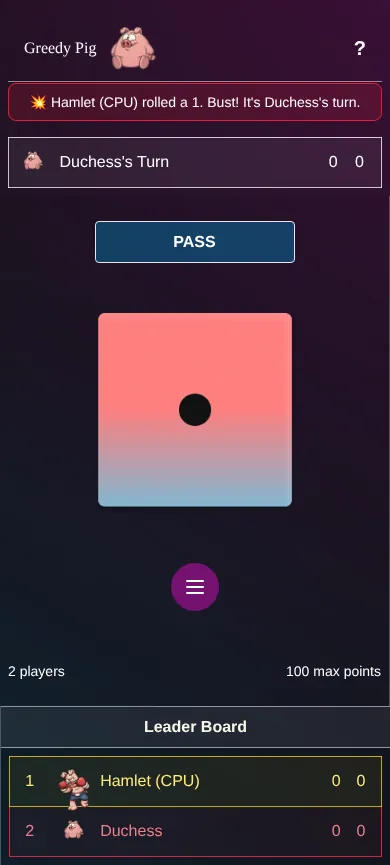
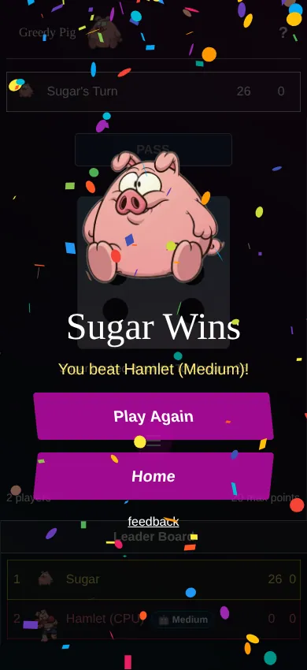
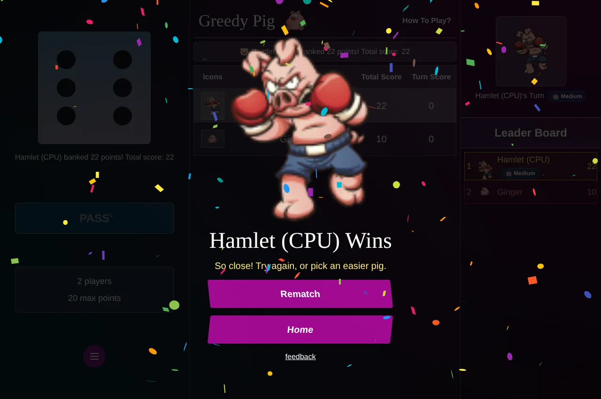
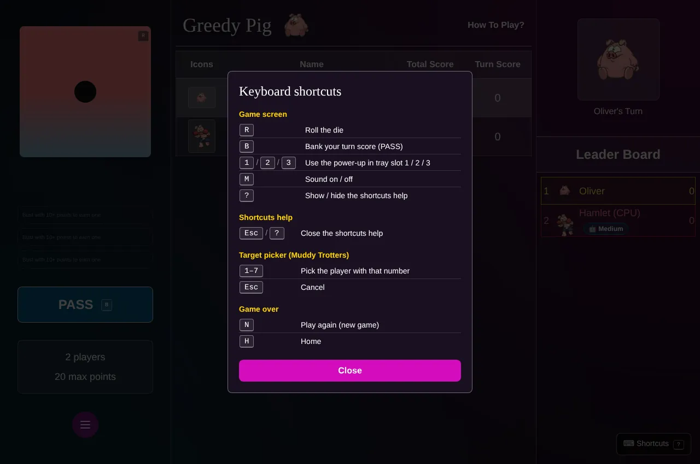
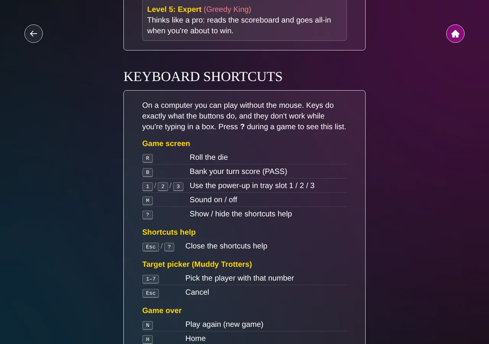

Slot 1 loaded
Greedy Pig
A push-your-luck dice game my CSC 419 team rebuilt as a server-backed web app, with pass-and-play for friends and a Play vs Computer mode with five difficulty levels.

Overview
Mission briefing
Each turn you roll one die as many times as you dare. Every roll adds to your turn score, but a 1 wipes it out and passes the turn. Press PASS to bank your points. The first player to reach the target score wins.
We started from an older React version that kept the whole game in the browser. Over one week, the team moved the rules to an Express and Supabase backend, connected every screen to it, and added a computer opponent, power-ups and keyboard shortcuts. We worked in feature branches with one pull request per task, each reviewed by a teammate before merging.
The problem
Why it needed fixing
The old game couldn't be trusted and couldn't be played alone. The browser picked the dice, added up the scores and decided the winner, and you always needed a second person.
- Fairness. With every rule in the browser, anyone could change a score from DevTools. Now the server rolls the die, keeps the scores, switches turns and decides the winner. The screens only show what the server says.
- Lost games. A refresh used to wipe the game. Games now live on the server and reload from their link.
- Playing alone. There was no single-player mode. Play vs Computer gives you an opponent at five levels, from Piglet (Very Easy) to Greedy King (Expert).
- Following the computer. A computer that plays instantly is confusing. My work shows what it's doing, keeps its last move on screen after its turn, and marks it clearly as a computer.
- Mouse-only play. Every roll and bank needed a click. My keyboard shortcuts let you play the whole game from the keyboard.
My part
Quests I completed
-
C2
Computer turns on the game screen
The computer rolls and banks by itself. While it plays, the screen shows "Hamlet is thinking", locks the dice, keeps a recap of its last move, and offers a Retry button if the server stops answering.
-
C4
Computer badges and game over
A robot badge with the level, like "Medium", marks computer players everywhere their name appears. The game-over screen says "You beat Hamlet (Medium)!" when you win, or offers a Rematch, with no confetti when you lose.
-
K1
Keyboard shortcuts
R rolls, B banks, M toggles sound and ? opens a shortcuts help overlay. Keys follow the same rules as the buttons and never fire while you're typing. I also added a Keyboard Shortcuts section to the How To Play page.
Features
What's in the cartridge
The game has eleven main features. I built the three marked "Me" and the team built the rest.
-
Server-side rules
The server rolls the die, keeps scores, switches turns and picks the winner.
Team
-
Pass-and-play
2 to 8 players share one screen, with pig avatars and a target score from 20 to 500.
Team
-
Play vs Computer
Pick your pig and one of five computer levels, then play one-on-one.
Team
-
Computer turns on the game screen
The computer plays by itself, shows that it's thinking, recaps its last move, locks the dice and offers Retry.
Me (C2)
-
Animated computer die
The computer's rolls tumble on the on-screen die and land on the server's number.
Team
-
Computer badges and game over
Robot badges show computer players and their level; the game-over screen is written for vs-computer games.
Me (C4)
-
Keyboard shortcuts
R, B, M and ? play the game from the keyboard, following the same rules as the buttons.
Me (K1)
-
How To Play page
Rules, the five computer levels, and a Keyboard Shortcuts section built from the same list the game uses.
Team, shortcuts section by me
-
Power-ups
Bust with 10 or more turn points to earn one of four power-ups, up to 3 held, 1 per turn.
Team
-
Mock server
A fake server inside the browser, so the frontend can be built and tested without the backend running.
Team
-
Phone layout
A separate mobile layout for the dice, scores and leaderboard.
Team, kept working in my tasks
Screenshots
Captured in game
Taken from the game running in mock mode, on a desktop screen and in a 375px phone view. Select any screenshot to see it full size.










Tech stack
Loadout
| Area | Technology | Used for |
|---|---|---|
| Frontend | React 18 (hooks, Context) | Every screen and the shared game state |
| Frontend | Vite 4 | Dev server and production build |
| Frontend | React Router 6 | Pages such as the game screen and the vs-computer setup |
| Frontend | Tailwind CSS 3 | All styling, including the phone layout |
| Backend | Node.js and Express | The game API: create game, get game, roll, bank, power-ups |
| Database | Supabase (PostgreSQL) | Stores games, players and power-ups |
| Testing | Mock game API in the browser | Building and testing the frontend without the backend |
| Quality | ESLint | No new lint errors allowed in a pull request |
| Teamwork | Git and GitHub pull requests | One branch per task, reviewed and squash-merged into main |
What I learned
Experience gained
-
Shipping one codebase with a whole team
This was my first time building one project with several people at once, and Git stopped being a save button and became how the team talked. Every task got its own branch, small commits and a pull request with screenshots, and a teammate reviewed it before it was squash-merged into main. I learned to keep my edits to shared files small so everyone's work merged cleanly, and to treat "no new lint errors" as part of done.
Getting there meant real setup on Windows: installing Git, fixing my PATH, setting my identity, cloning instead of downloading a ZIP, and sorting out a 403 by getting collaborator access. One of my commits once went in empty because I hadn't saved the file. Now I run
git diff --statbefore every commit. -
The server is the referee
Our golden rule was that no component adds up scores, picks a die value or decides a winner. The browser only asks and displays. That even applies to my computer opponent: it uses the same
roll()andbank()calls as a human player, so it can never cheat. -
Remembering the previous render with useRef
When the computer banks, the server's message and the turn change arrive in the same update, so its last move would vanish before anyone could read it. A
useRefholding "whose turn was it before?" was the only way to keep the computer's recap on screen after its turn ended.